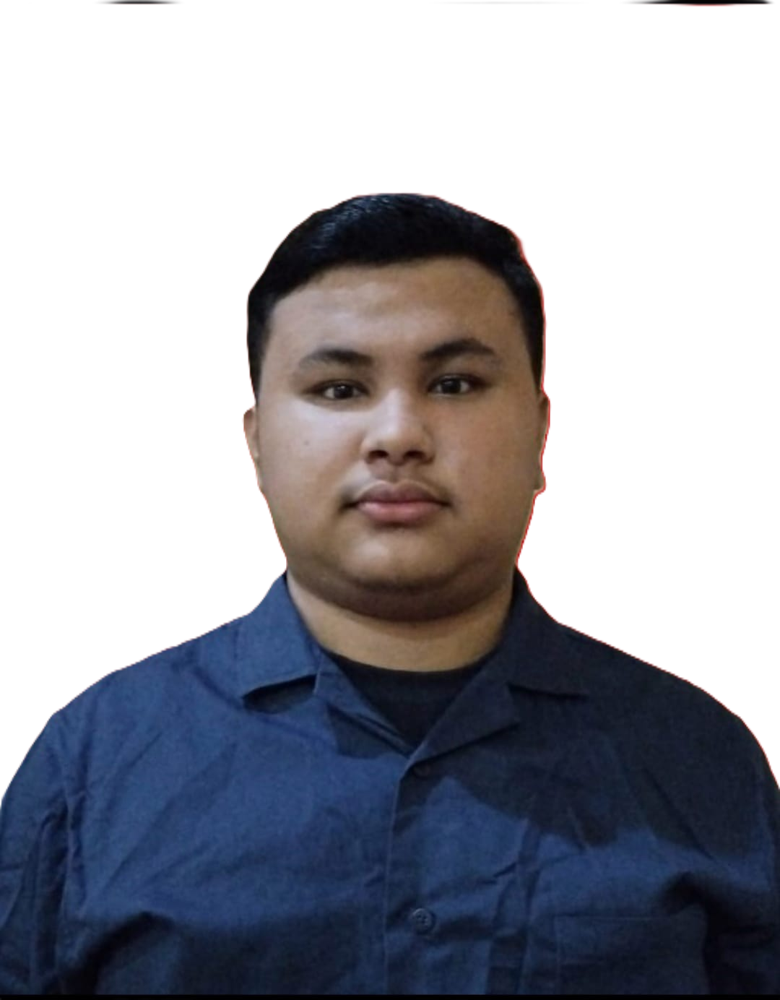

Undergraduate Business Information Technology Student at Bina Nusantara University (School of Information Systems).

Saya adalah mahasiswa Business Information Technology di Bina Nusantara University (School of Information Systems). Memiliki minat mendalam pada pengembangan sistem informasi, perancangan antarmuka aplikasi, serta analisis kebutuhan bisnis dan integrasi teknologi.
Dalam alur kerja pengembangan web dan sistem, saya berfokus pada efisiensi logika bisnis, pengalaman pengguna (UX) yang intuitif, serta pemanfaatan tools AI modern untuk mempercepat proses pembuatan dan pengujian perangkat lunak.
Pengembangan antarmuka web yang responsif dan terstruktur.
Pengolahan logika sistem backend dan manajemen basis data.
Perancangan proses bisnis, prototyping, dan integrasi AI.
Platform jasa titip (Jastip) berbasis traveler dengan sistem pembayaran Escrow (Rekber), verifikasi KYC, QC Room, serta manajemen rute bagi traveler.
Platform pengelolaan sampah dan daur ulang dengan fitur barter barang bekas, kuis lingkungan berhadiah, dan Admin Panel.
Sistem pemesanan dan pembayaran cafe terintegrasi untuk pengelolaan stok, transaksi interaktif, dan laporan operasional.